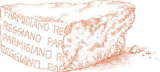
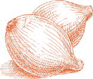
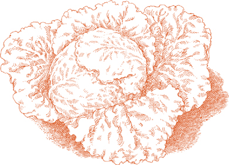

ИТАЛЬЯНСКИЕ СУПЫ обязаны своим характером двум элементам: сезону и месту происхождения.
Сезоны определяют выбор овощей, бобовых, клубней и трав, которые, за исключением нескольких рыбных супов, которые больше являются морепродуктами, чем настоящими супами, обычно присутствуют в значительном количестве, либо как акцент, либо как основной ингредиент.
Место формирует стиль. Овощной суп может рассказать вам, где вы находитесь в Италии почти так же точно, как карта. Есть супы юга, основанные на помидорах, чесноке и оливковом масле, часто дополненные пастой; супы Тосканы и других центральных итальянских регионов, которые укреплены бобами и поддерживаются толстыми ломтями хлеба; супы севера с рисом; ароматные супы Ривьеры с салатами и свежими травами.
Единственная общая черта итальянских супов, единственная отличительная особенность, это их сытность. Некоторые могут быть легче других; некоторые могут быть жидкими; некоторые густыми. В некоторых супах бобы или картофель могут быть протерты через сито. Однако в ни одном супе текстура, консистенция, вес — физическая идентичность ингредиентов — полностью не стерта. В итальянском репертуаре нет супов из кухонного комбайна, нет крем-супов из чего-либо.
ДОМА, в моей родной Романье, вот как мы готовим минестроне. К сезонным овощам мы добавляем всегда доступные основные продукты — морковь, лук, картофель — и варим их в хорошем бульоне на медленном огне в течение нескольких часов. Результат — суп с плотным, мягким вкусом, который не напоминает ни один конкретный овощ, но все сразу.
Обратите внимание, что все ингредиенты не добавляются в кастрюлю одновременно, а поочередно, как указано. Сначала пассеруя лук, вы создаете основной вкус, который затем передается другим овощам по очереди. Пока один овощ готовится, вы можете очистить и нарезать другой, что является более эффективным и менее утомительным методом, чем подготовка всех овощей сразу. Если удобнее, вы, конечно, можете подготовить все овощи заранее, но соблюдайте указанные в рецепте интервалы приготовления.
На 6–8 порций
1 фунт (450 г) свежих цукини
½ чашки оливкового масла первого холодного отжима
3 столовые ложки масла
1 чашка тонко нарезанного лука
1 чашка нарезанной кубиками моркови
1 чашка нарезанного кубиками сельдерея
2 чашки очищенного, нарезанного кубиками картофеля
¼ фунта (115 г) свежей зеленой фасоли
3 чашки нашинкованной савойской капусты ИЛИ обычной капусты
1½ чашки консервированных каннеллini бобов, слитых, ИЛИ ¾ чашки сушеных белых бобов, замоченных и приготовленных согласно инструкции
6 чашек Основного домашнего мясного бульона, ИЛИ 2 чашки консервированного говяжьего бульона и 4 чашки воды
ПО ЖЕЛАНИЮ: корка от куска сыра пармиджано-реджано весом 1–2 фунта (450–900 г), тщательно очищенная
⅔ чашки консервированных импортных итальянских сливовых помидоров с соком
Соль
⅓ чашки свеженатертого сыра пармиджано-реджано
1. Замочите цукини в большой миске с холодной водой на минимум 20 минут, затем промойте их от оставшегося песка. Обрежьте оба конца каждого цукини и мелко нарежьте.
2. Выберите кастрюлю, которая сможет вместить все ингредиенты. Вложите масло, масло и нарезанный лук, затем включите средний огонь. Готовьте лук в открытой кастрюле, пока он не увянет и не станет бледно-золотистым, но не темнее.
3. Добавьте нарезанную морковь и готовьте 2–3 минуты, помешивая один или два раза. Затем добавьте сельдерей и готовьте, периодически помешивая, 2 или 3 минуты. Добавьте картофель, повторяя ту же процедуру.
4. Пока морковь, сельдерей и картофель готовятся, замочите зеленую фасоль в холодной воде, промойте, отломите оба конца и нарежьте.
5. Добавьте нарезанную зеленую фасоль в кастрюлю, и когда она проварится 2–3 минуты, добавьте цукини. Продолжайте время от времени помешивать все ингредиенты, а через несколько минут добавьте нашинкованную капусту. Продолжайте готовить еще 5–6 минут.
6. Добавьте бульон, по желанию корочку сыра, помидоры с соком и щепотку соли. Если используете консервированный бульон, слегка посолите на этом этапе, а позже попробуйте и при необходимости добавьте соль. Тщательно перемешайте содержимое кастрюли. Накройте кастрюлю и уменьшите огонь, отрегулируйте его так, чтобы суп медленно закипал, готовясь на устойчивом, но мягком кипении.
7. Когда суп будет готов через 2½ часа, добавьте отцеженные, приготовленные каннелллини, хорошо перемешайте и готовьте еще как минимум 30 минут. При необходимости вы можете выключить огонь в любое время и продолжить готовить позже. Готовьте до тех пор, пока консистенция не станет довольно густой. Минестроне никогда не должен быть жидким и водянистым. Если вы заметите, что суп становится слишком густым до завершения приготовления, вы можете немного разбавить его домашним бульоном или, если вы начали с консервированного бульона, водой.
8. Когда суп будет готов, незадолго до того как вы выключите огонь, удалите корочку сыра, добавьте тертый сыр, затем попробуйте и при необходимости добавьте соль.
Заметка заранее
 Минестроне,
в отличие от большинства приготовленных
овощных блюд, становится даже лучше, когда его разогревают на следующий
день. Он может храниться до недели в плотно закрытом контейнере в
холодильнике.
Минестроне,
в отличие от большинства приготовленных
овощных блюд, становится даже лучше, когда его разогревают на следующий
день. Он может храниться до недели в плотно закрытом контейнере в
холодильнике.

ВЛЕТО в Милане траттории готовят этот минестроне первым делом утром, разливают его по индивидуальным суповым тарелкам и выставляют на стол у входа рядом с другими вероятными деликатесами дня, такими как ассорти из хрустящих овощей для пинцимонио, холодный запеченный судак, пармская ветчина с сладкими канталупами или, в конце лета, с спелыми, сочными инжирами. К двенадцати тридцати или одному часу, когда садятся первые обеденные гости, минестроне достигнет именно нужной температуры и консистенции.
Поскольку вкус овощного супа улучшается при повторном разогреве, вам не обязательно готовить этот минестроне полностью с нуля в тот же день, когда вы собираетесь его подавать. Вы можете приготовить суп, который составляет его основу, за день или два до этого и достать его из холодильника, когда будете готовы начать. Имейте в виду, что после завершения холодный минестроне нуждается как минимум в одном часе времени для остывания до наиболее желаемой температуры подачи.
На 4 порции
2 чашки овощного супа, стиль Романья
½ чашки риса, предпочтительно итальянского риса Арборио
Соль
Черный перец, свежемолотый
¼ чашки свеженатертого сыра пармиджано-реджано
8–10 свежих листьев базилика, порванных на несколько мелких полосок
2 столовые ложки оливкового масла первого холодного отжима
1. Положите овощной суп и 2 чашки воды в кастрюлю и доведите до кипения на среднем огне. Добавьте рис, хорошо перемешивая его деревянной ложкой.
2. Когда суп снова закипит, добавьте соль и несколько щепоток перца. Перемешайте, накройте кастрюлю крышкой и уменьшите огонь до среднего. Перемешивайте время от времени. Начните пробовать рис на готовность через 12 минут. Не переварите его, так как он продолжит размягчаться позже, пока суп остывает на тарелке. Когда рис будет готов, перед выключением огня добавьте тертый сыр, затем попробуйте и исправьте вкус по соли.
3. Разлейте суп по индивидуальным тарелкам или мискам, добавьте порванные листья базилика, хорошо перемешайте и оставьте на некоторое время. Подавайте при комнатной температуре, сбрызнув каждую тарелку немного оливковым маслом.
Примечание
Не
подавайте суп позже, чем в день его приготовления, и не охлаждайте его
перед подачей.
В конце Шага 2 в предыдущем рецепте, когда рис готов, добавьте 2 столовые ложки песто. После разливания по тарелкам с супом или индивидуальным мискам, исключите свежие листья базилика.
ТАКОЙ суп легче и свежее на вкус, чем более знакомые версии овощного супа. У него нет, и он не стремится к сложной резонансу вкусов, которую достигает минестроне благодаря длительному приготовлению обширного ассортимента овощей. Это просто сладковатая смесь артишоков и горошка, поддерживаемая основой из картофеля, приготовленного с оливковым маслом и чесноком.
На 4–6 порций
1 столовая ложка лимонного сока
1 фунт свежего горошка, взвешенного в стручках, ИЛИ ½ упаковки замороженного горошка весом 10 унций, размороженного
⅓ чашки оливкового масла первого холодного отжима
1 столовая ложка мелко нарезанного чеснока
1 фунт (450 г) картофеля для варки, очищенного, вымытого и нарезанного ломтиками толщиной ¼ дюйма (0.6 см)
Соль
Черный перец, свежемолотый
3 столовые ложки мелко нарезанной петрушки
ПО ЖЕЛАНИЮ: 1 ломтик на порцию поджаренного хрустящего хлеба, слегка натертого чесноком
1. Обрежьте у артишоков жесткие листья и верхушки. Разрежьте их вдоль пополам и удалите сердцевину и колючие внутренние листья.
2. Нарежьте половинки артишоков вдоль на максимально тонкие ломтики и положите их в миску с достаточным количеством воды, чтобы покрыть, добавив лимонный сок в воду.
3. Если используете свежий горошек, очистите его от стручков и подготовьте некоторые стручки для приготовления, удалив их внутренние мембраны. Не обязательно использовать все или даже большинство стручков, но сделайте столько, сколько у вас хватит терпения. Чем больше стручков попадет в кастрюлю, тем слаще будет суп.
4. Положите оливковое масло и чеснок в кастрюлю для супа, включите средний огонь и пассеруйте чеснок до светло-золотистого цвета. Затем добавьте нарезанный картофель. Уменьшите огонь до среднего, накройте кастрюлю крышкой и готовьте около 10 минут.
5. Если используете размороженный замороженный горошек, отложите его на потом и перейдите к шагу 6 ниже. Если используете свежий горошек, продолжайте следующим образом: в кастрюлю положите горошек и очищенные стручки, перемешайте в течение 3–4 минут, чтобы покрыть их, и добавьте достаточно воды, чтобы покрыть. Накройте кастрюлю крышкой, уменьшите огонь до среднего и готовьте 20 минут.
6. Слейте ломтики артишоков, промыв их от кислой воды. Положите их в кастрюлю с солью и несколькими щепотками перца. Готовьте артишоки в открытой кастрюле в течение 3–4 минут, хорошо помешивая.
7. Добавьте достаточно воды, чтобы покрыть артишоки, накройте кастрюлю и установите средний огонь. Готовьте артишоки, пока они не станут очень мягкими при прокалывании вилкой, около 30 минут, в зависимости от их свежести и молодости.
8. Если используете замороженный горошек, добавьте его сейчас и готовьте еще 10 минут.
9. Перед тем как выключить огонь, добавьте петрушку и перемешайте один-два раза. Разлейте суп по индивидуальным тарелкам на опциональный ломтик хлеба. Подавайте немедленно.
Заметка заранее
Суп можно
приготовить до Шага 8 за несколько часов до подачи. Разогрейте осторожно и
завершите, как указано в Шаге 9.
На 5–6 порций
2 фунта (900 г) свежего шпината ИЛИ 2 упаковки по 10 унций (по 280 г) замороженного шпината, размороженного
Соль
4 столовые ложки (½ пачки) масла
2 столовые ложки нарезанного лука
2 чашки Основного домашнего мясного бульона, ИЛИ 1 чашка консервированного говяжьего бульона, разбавленного 1 чашкой воды
2 чашки молока
Целый мускатный орех
5 столовых ложек свеженатертого сыра пармиджано-реджано
1. Если используете свежий шпинат: Выбросьте все вялые, поврежденные листья и обрежьте все стебли. Замочите на несколько минут в тазу или раковине с холодной водой, слейте воду и снова наполните таз или раковину свежей холодной водой, повторяя всю процедуру несколько раз, пока в воде не останется следов земли.
2. Поместите шпинат в кастрюлю с не более чем тем количеством воды, которое прилипло к его листьям. Добавьте 1 столовую ложку соли, накройте кастрюлю, включите средний огонь и готовьте до мягкости, около 5 минут или меньше, в зависимости от свежести и молодости шпината.
3. Слейте шпинат и, как только он остынет достаточно, чтобы с ним можно было работать, аккуратно отожмите, чтобы избавиться от большей части влаги, и нарежьте его довольно крупно.
Если используете замороженный шпинат: Отожмите влагу, когда он разморозится, и нарежьте его крупно.
4. Положите масло и лук в кастрюлю для супа и включите средний огонь. Пассеруйте лук, пока он не станет светло-золотистым. Добавьте приготовленный свежий или размороженный шпинат и обжаривайте в открытой кастрюле в течение 2–3 минут, помешивая, чтобы он хорошо покрылся.
5. Добавьте бульон, молоко и небольшую щепотку — не более ⅛ чайной ложки — мускатного ореха и доведите до кипения, время от времени помешивая.
6. Добавьте тертый пармезан, тщательно перемешайте его в супе, попробуйте и исправьте вкус, выключите огонь.
7. Разлейте по индивидуальным тарелкам или мискам и подавайте кростини отдельно.
Кростини — это легкие в приготовлении итальянские аналоги гренок, которые так вкусны во многих супах, особенно если вы сможете приготовить их незадолго до подачи супа на стол.
На 4 порции
4 ломтика качественного белого хлеба
Овощное масло, достаточно, чтобы покрыть
½ дюйма (1.25 см) по бокам сковороды
1. Обрежьте корки с ломтиков хлеба и нарежьте их на квадраты размером ½ дюйма (1.25 см).
2. Вылейте масло в сковороду среднего размера и включите средний огонь. Масло должно нагреться так, чтобы хлеб шипел, когда вы его положите. Когда вы думаете, что оно готово, проверьте с одним квадратом. Если он шипит, положите столько кусочков хлеба, сколько поместится, не перегружая сковороду. Не имеет значения, если они не все войдут сразу, потому что вы можете сделать две или более партий. Уменьшите огонь, потому что хлеб быстро сгорит, если масло станет слишком горячим. Перемещайте квадраты в сковороде длинной ложкой или лопаткой, и как только они станут светло-золотистыми, удалите их с помощью шумовки или лопатки и положите на бумажные полотенца или решетку для остывания, чтобы избавиться от лишнего масла.
Если вы готовите более одной партии, корректируйте огонь по мере необходимости, чтобы избежать подгорания хлеба. Тем не менее, масло должно оставаться достаточно горячим, чтобы быстро и слегка подрумянить квадраты.
Заметка заранее
Кростини лучше всего подавать сразу после приготовления. Тем не
менее, их можно приготовить за несколько часов до подачи и хранить при
комнатной температуре. Не храните их на ночь, так как они могут приобрести
затхлый, прогорклый вкус.
Ингредиенты в любом из этих супов настолько немногочисленны, что их необходимо тщательно выбирать, чтобы передать тот уютный вкус, на который они способны. Хотя для практичности предлагаются альтернативы для домашнего мясного бульона, надежда здесь заключается в том, что вы их проигнорируете, полагаясь вместо этого на запасы хорошего замороженного бульона, который вы всегда стараетесь иметь под рукой.
На 4–6 порций
1 головка эскаролы ИЛИ 1 фунт свежего шпината
Соль
4 столовые ложки (½ пачки) масла
2 столовые ложки нарезанного лука
3½ чашки Основного домашнего мясного бульона, ИЛИ 1 чашка консервированного говяжьего бульона, разбавленного 2½ чашками воды ИЛИ 2 кубика бульона, растворенные в 3½ чашках воды
⅓ чашки риса, предпочтительно итальянского риса Арборио
3 столовые ложки свеженатертого сыра пармиджано-реджано
1. Если используете эскаролем: Отделите все листья от корня и выбросьте те, что повреждены, вялые или с пятнами. Замочите остальные в нескольких обильных сменах холодной воды, пока они не будут полностью очищены от земли. Слейте воду и нарежьте полосками шириной около ½ дюйма (1.25 см). Отложите в сторону.
Если используете шпинат: Если листья шпината все еще прикреплены к корню, отрежьте его и выбросьте, отделив каждый пучок на отдельные листья. Не обрезайте стебли, так как и листья, и стебли идут в этот суп. Замочите шпинат в нескольких сменах холодной воды.
Приготовьте шпинат в закрытой сковороде на среднем огне, добавив щепотку соли, чтобы сохранить его зеленым, но без другой жидкости, кроме той, что остается на листьях. Когда выделившаяся вода начнет закипать, готовьте еще около 2–3 минут.
Соберите шпинат с помощью дуршлага или большой шумовки. Не выбрасывайте оставшуюся в сковороде жидкость. Как только шпинат остынет достаточно, чтобы его можно было держать, аккуратно отожмите его, позволяя всей выделившейся жидкости вернуться в сковороду. Отложите шпинат, сохранив жидкость.
2. Положите масло и нарезанный лук в большую сковороду для пассерования и включите средний огонь. Пассеруйте лук, пока он не станет светло-золотистым, затем добавьте эскароль или шпинат.
Если используете эскароль: Добавьте щепотку соли, чтобы помочь ей сохранить цвет, перемешайте 2–3 раза, чтобы она равномерно покрылась, затем добавьте ½ чашки бульона, уменьшите огонь до минимума и накройте сковороду. Готовьте, пока эскароль не станет мягкой, примерно 25–45 минут, в зависимости от свежести и молодости зелени.
Если используете шпинат: Пассеруйте шпинат на сильном огне с луком и маслом в течение нескольких минут, перемешивая 2–3 раза.
3. Переложите все содержимое сковороды в кастрюлю для супа, добавьте весь бульон и, если вы использовали шпинат, 1 чашку отложенной шпинатной жидкости. Накройте кастрюлю и включите средний огонь. Когда бульон закипит, добавьте рис и снова накройте кастрюлю. Отрегулируйте огонь, чтобы готовить на медленном, равномерном кипении, периодически помешивая, пока рис не будет готов. Примерно через 20–25 минут он должен быть упругим на вкус, но нежным, не мучнистым внутри.
4. Когда рис будет готов, добавьте тертый пармезан и попробуйте, добавьте соль по вкусу. Подавайте немедленно.
Примечание
Консистенция супа
должна быть густой, но все же достаточно жидкой, чтобы ложка не оставалась
пустой. Если вы заметите, что во время приготовления риса он становится
слишком густым, добавьте половник воды или шпинатной жидкости, если она
доступна. Но убедитесь, что не разбавляете суп слишком сильно.
Примечание заранее
Как только рис окажется в супе, его необходимо закончить и подать
сразу, иначе рис станет кашеобразным. Если вам нужно приготовить его
заранее, остановитесь в конце Шага 2 и возобновите приготовление, когда
будете готовы подавать. Начинайте суп в тот же день, когда планируете
его есть, и не refrigerate его.
Для альтернативной версии того же супа, который придаст ему более насыщенный вкус, замените 3 столовые ложки оливкового масла первого холодного отжима на масло, и 2 чайные ложки нарезанного чеснока на лук. Хотя пармезан по-прежнему является хорошим выбором для завершающего штриха, вместо него вы можете сделать следующее: После того как суп будет готов и разлит по тарелкам, сбрызните немного свежего оливкового масла на каждую тарелку и посыпьте несколькими щепотками черного перца.
25 АПРЕЛЯ, когда вся Италия отмечает день освобождения страны от фашистского и немецкого владычества, Венеция отмечает свой самый драгоценный день — день рождения святого Марка, покровителя республики, просуществовавшей 1000 лет. Традиция заключалась в том, что в честь апостола 25 апреля пробовали первое блюдо, которое на протяжении остальной весны становилось любимым на венецианском столе, риси э биси, рис с горошком.
В списке ингредиентов не предлагается альтернативы свежему горошку, потому что основное качество этого блюда заключается во вкусе, который есть только у хорошего, свежего горошка. Чтобы сделать горошек еще слаще, многие итальянские семьи добавляют стручки в кастрюлю. Если вы следуете инструкциям ниже, которые описывают, как подготовить стручки к варке, вы приобретете технику, которая будет полезна во многих других рецептах, требующих горошка. Другим важным компонентом вкуса риси э биси является домашний бульон, для которого не может быть рекомендована удовлетворительная замена.
Риси э биси — это не ризотто с горошком. Это суп, хотя и очень густой. Некоторые повара делают его достаточно густым, чтобы есть его вилкой, но он лучше всего получается, когда он достаточно жидкий, чтобы требовать ложки.
На 4 порции
2 фунта (900 г) свежего, молодого горошка с стручками
4 столовые ложки (½ пачки) масла
2 столовые ложки нарезанного лука
Соль
3½ чашки Основного домашнего мясного бульона
1 чашка итальянского риса
2 столовые ложки нарезанной петрушки
½ чашки свеженатертого сыра пармиджано-реджано
1. Очистите горошек. Сохраните 1 чашку пустых стручков, выбирая самые хрустящие и неповрежденные, и выбросьте остальные.
2. Разделите две половинки каждого стручка. Возьмите одну половинку стручка, повернув блестящую, внутреннюю, вогнутую сторону, в которой находился горошек, к себе. Эта сторона покрыта жесткой, пленкообразной мембраной, которую необходимо снять. Держите стручок одной рукой, а другой аккуратно сломайте один конец, потянув его вниз к самому стручку. Вы увидите, как тонкая мембрана отделяется без сопротивления. Поскольку она очень тонкая, она может оторваться до того, как вы полностью ее снимете. Не беспокойтесь об этом: оставьте очищенную часть стручка, сломайте другой конец стручка и попытайтесь удалить оставшуюся часть мембраны. Отрежьте и выбросьте те части стручка, которые вы не смогли полностью очистить. Не обязательно, чтобы стручки были идеальными, так как они все равно растворятся в процессе приготовления. Любая очищенная часть подойдет, так как ее задача — подсластить суп. Добавьте все подготовленные кусочки стручков к очищенному горошку, замочите в холодной воде, слейте и отложите в сторону.
3. Положите масло и лук в кастрюлю для супа и включите средний огонь. Пассеруйте лук до светло-золотистого цвета, затем добавьте горошек и очищенные стручки, а также хорошую щепотку соли, чтобы сохранить зеленый цвет горошка. Готовьте в течение 2–3 минут, помешивая, чтобы хорошо покрыть горошек.
4. Добавьте 3 чашки бульона, накройте кастрюлю и отрегулируйте огонь так, чтобы бульон медленно кипел в течение 10 минут.
5. Добавьте рис и оставшиеся ½ чашки бульона, перемешайте, снова накройте кастрюлю и готовьте на умеренном кипении, пока рис не станет мягким, но при этом упругим, примерно 20 минут. Помешивайте время от времени во время приготовления супа.
6. Когда рис будет готов, вмешайте петрушку, затем тертый пармезан. Попробуйте и исправьте по вкусу, затем выключите огонь.
ХОРОШИЕ ОСТАТКИ делают хорошие супы, и этот суп использует Тушеную капусту в венецианском стиле. Однако это слишком хороший суп, чтобы ждать, пока останется достаточно капусты, поэтому рецепт ниже дан с предположением, что вы начнете с нуля.
Как и risi e bisi, венецианский суп с рисом и горошком, который предшествует этому рецепту, этот суп довольно густой, но он не совсем ризотто. Он должен быть достаточно жидким, чтобы требовать ложки.
На 4–6 порций
Тушеная капуста (ее можно приготовить за 2–3 дня до этого.)
3 чашки Основного домашнего мясного бульона, ИЛИ 1 чашка консервированного говяжьего бульона, разбавленного 2 чашками воды ИЛИ 1½ кубиков бульона, растворенных в 3 чашках теплой воды
⅔ чашки риса, предпочтительно итальянского риса Арборио
2 столовые ложки масла
⅓ чашки свеженатертого parmigiano-reggiano сыра
Соль
Черный перец, свежемолотый
1. Положите капусту и бульон в кастрюлю для супа и включите средний огонь.
2. Когда бульон закипит, добавьте рис. Готовьте без крышки, регулируя огонь так, чтобы суп медленно, но уверенно кипел, помешивая время от времени, пока рис не будет готов. Он должен быть мягким, но упругим на вкус и готовиться около 20 минут. Если во время приготовления риса суп становится слишком густым, разбавьте его половником домашнего бульона. Если вы не используете домашний бульон, просто добавьте воду. Помните, что в итоге суп должен быть довольно густым.
3. Когда рис будет готов, перед тем как выключить огонь, добавьте масло и тертый пармезан, тщательно перемешивая. Попробуйте и исправьте по вкусу, добавив немного черного перца. Разлейте суп по индивидуальным тарелкам и дайте ему настояться всего несколько минут перед подачей.

КОГДА я СТАЛА женой и, по необходимости, поваром, это было одно из первых блюд, которые я научилась готовить. Прошло десятилетия, в течение которых я готовила бесчисленное множество других супов, но я все еще обращаюсь к этой минестрине — маленькому супу — за его очарованием, восхитительным контрастом текстур, простотой и неизменной способностью радовать.
На 4–6 порций
1½ фунта картофеля
2 столовые ложки масла
3 столовые ложки растительного масла
3 столовые ложки мелко нарезанного лука
3 столовые ложки мелко нарезанной моркови
3 столовые ложки мелко нарезанного сельдерея
5 столовых ложек свеженатертого сыра пармиджано-реджано, плюс дополнительный сыр на столе
1 чашка молока
2 чашки Основного домашнего мясного бульона, ИЛИ ½ чашки консервированного говяжьего бульона, разбавленного 1½ чашками воды
Соль
2 столовые ложки нарезанной петрушки
1. Очистите картофель, промойте его в холодной воде и нарежьте небольшими кусочками. Положите их в кастрюлю для супа с достаточным количеством холодной воды, чтобы покрыть, накройте кастрюлю крышкой и включите средний огонь. Варите картофель до мягкости, затем пюрируйте их вместе с жидкостью через крупные отверстия мясорубки обратно в кастрюлю. Отложите в сторону.
2. Положите масло, масло и нарезанный лук в сковороду и включите средний огонь. Пассеруйте лук до светло-золотистого цвета. Добавьте нарезанную морковь и сельдерей и готовьте около 2 минут, помешивая овощи, чтобы они хорошо покрылись. Не готовьте их слишком долго, чтобы они не стали мягкими, так как вы хотите, чтобы они оставались заметно хрустящими в супе.
3. Переложите все содержимое сковороды в кастрюлю с картофелем. Включите средний огонь и добавьте тертый пармезан, молоко и бульон. Перемешайте и готовьте на медленном кипении в течение нескольких минут, пока жир, плавающий на поверхности, не распределится по всему супу. Не позволяйте супу становиться гуще, чем по консистенции сливки. Если это произойдет, разбавьте его равными частями бульона и молока. Попробуйте и исправьте по соли. Снимите с огня, аккуратно вмешайте нарезанную петрушку, затем разлейте по индивидуальным тарелкам или мискам. Подавайте с свеженатертым пармезаном и кростини на гарнир.
На 6 порций
2 фунта (900 г) картофеля
3 столовые ложки масла
3 столовые ложки растительного масла
1½ фунта (700 г) лука, нарезанного очень тонко
Соль
3½ чашки Основного домашнего мясного бульона, ИЛИ ½ чашки консервированного говяжьего бульона, разведенного с 3 чашками воды
3 столовые ложки свеженатертого пармиджано-реджано сыра, плюс дополнительный сыр на столе
1 столовая ложка нарезанной петрушки
1. Очистите картофель, нарежьте его кубиками по ½ дюйма (1.25 см), промойте в холодной воде и отложите в сторону.
2. Положите масло, растительное масло, весь нарезанный лук и щедрую щепотку соли в кастрюлю для супа и включите средний огонь. Не накрывайте кастрюлю. Готовьте лук на медленном огне, периодически помешивая, пока он не увянет и не станет светло-коричневым.
3. Добавьте нарезанный картофель, увеличьте огонь до сильного и быстро пассеруйте картофель, перемешивая его с луком, чтобы хорошо покрыть.
4. Добавьте бульон, накройте кастрюлю и отрегулируйте огонь так, чтобы бульон медленно и равномерно закипал. Когда картофель станет очень мягким, разомните большую часть его, прижимая к стенке кастрюли длинной деревянной ложкой. Тщательно перемешайте и готовьте еще 8–10 минут. Если вы заметите, что суп становится слишком густым, добавьте до половника бульона или, если вы не используете домашний бульон, добавьте воду.
5. Прежде чем выключить огонь, добавьте тертый пармезан и петрушку, затем попробуйте и исправьте по вкусу, добавив соль. Разлейте по индивидуальным тарелкам или мискам и подавайте с дополнительным тертым сыром сбоку.
ПРИВЛЕКАТЕЛЬНЫЙ ВКУС этого супа возникает из сочетания сладости и солености. Сладость в основном обеспечивается горошком, что приводит к следующему выводу: если свежий горошек на рынке местного производства, в сезон, молодой и сочный, он, безусловно, ваш первый выбор; если он мучнистый, очень зрелый, привезенный издалека, лучше выбрать замороженный.
На 4–6 порций
2 столовые ложки масла
2 столовые ложки растительного масла
3 чашки лука, нарезанного очень тонкими ломтиками
Соль
2 зубчика чеснока, очищенных и нарезанных бумажно-тонкими ломтиками
3 чашки картофеля, очищенного и нарезанного очень-очень мелкими кубиками
Основной домашний мясной бульон, достаточно, чтобы покрыть все ингредиенты на 5 см, ИЛИ 1 кубик говяжьего бульона
2 фунта свежего горошка, вес без стручков, ИЛИ 1 упаковка замороженного горошка весом 280 г, размороженного
Черный перец, свежемолотый
Свеженатертый пармиджано-реджано для подачи на стол
1. Выберите кастрюлю, которая сможет вместить все ингредиенты, положите в нее масло, оливковое масло, нарезанный лук и крупную щепотку соли, включите огонь на слабый, и накройте кастрюлю крышкой. Готовьте лук, периодически помешивая, пока он не станет очень мягким и не выпустит всю свою жидкость. Затем снимите крышку, увеличьте огонь до среднего и готовьте, помешивая один-два раза, пока вся жидкость не выпарится, а лук не приобретет золотисто-коричневый цвет.
2. Добавьте нарезанный чеснок и готовьте, помешивая один-два раза, пока он не станет светло-золотистым. Добавьте нарезанный кубиками картофель, переворачивая его несколько раз в течение одной-двух минут, чтобы хорошо его покрыть, затем добавьте достаточно бульона, чтобы покрыть картофель на 5 см, или эквивалентное количество воды вместе с кубиком бульона. Уменьшите огонь, чтобы готовить на медленном, равномерном кипении, накройте кастрюлю и готовьте около 30 минут.
3. Добавьте очищенный свежий горошек или размороженный. Если используете свежий горошек, готовьте еще 10 минут или более, пока он не будет готов, добавляя жидкость, если она упадет ниже первоначального уровня. (Ожидайте, что значительное количество мелких картофельных кубиков растворится.) Если используете замороженный горошек, готовьте, пока он не потеряет сырой вкус, около 4–5 минут. Попробуйте и исправьте по соли. Добавьте несколько щепоток перца, перемешайте и подавайте сразу же, с тертым пармезаном на стороне.
Заранее
Вы можете
приготовить суп за день до подачи и аккуратно разогреть его
непосредственно перед подачей.

На 6 порций
2 средних картофелины для варки
½ фунта (225 г) сушеного зеленого горошка
5 чашек Основного домашнего мясного бульона, ИЛИ 1 чашка консервированного говяжьего бульона, разбавленного 4 чашками воды ИЛИ 1 кубик бульона, растворенный в 5 чашках воды
3 столовые ложки масла
3 столовые ложки растительного масла
2 столовые ложки нарезанного лука
3 столовые ложки свеженатертого пармезана, плюс дополнительный сыр на столе
Соль
1. Очистите картофель и нарежьте его на мелкие кусочки. Промойте в холодной воде и дайте стечь.
2. Промойте зеленый горошек в холодной воде и дайте стечь.
3. Положите картофель и горошек в кастрюлю для супа вместе с 3 чашками бульона, накройте, включите средний огонь и готовьте на медленном кипении, пока картофель и горошек не станут мягкими. Выключите огонь.
4. Протерите картофель и горошек с жидкостью через кухонный сито обратно в кастрюлю.
5. Положите масло и растительное масло в небольшую сковороду, добавьте нарезанный лук, включите средний высокий огонь. Готовьте лук, помешивая, пока он не станет золотисто-коричневым.
6. Вылейте все содержимое сковороды в кастрюлю с картофелем и горошком, добавьте оставшиеся 2 чашки бульона, накройте и включите средний огонь, регулируя его так, чтобы суп кипел равномерно, но медленно. Готовьте, время от времени помешивая, пока плавающее масло и жир не распределятся равномерно по бульону.
7. Перед тем как выключить огонь, вмешайте тертый пармезан, затем попробуйте и исправьте вкус солью. Разлейте по индивидуальным тарелкам или мискам и подавайте с кростини сбоку и дополнительным тертым пармезаном на столе.

На 4 порции
3 столовые ложки масла
3 столовые ложки растительного масла
2 столовые ложки лука, очень мелко нарезанного
⅓ чашки тертой панчетты ИЛИ прошутто ИЛИ не копченого деревенского окорока
2 столовые ложки моркови, мелко нарезанной
2 столовые ложки сельдерея, мелко нарезанного
1 чашка консервированных импортных итальянских сливовых томатов, нарезанных, с соком
½ фунта сушеной чечевицы
4 чашки Основного домашнего мясного бульона, ИЛИ 1 чашка консервированного говяжьего бульона, разбавленного 3 чашками воды
Соль
Черный перец, свежемолотый
3 столовые ложки свеженатертого пармиджано-реджано, плюс дополнительный сыр на столе
1. Положите 2 столовые ложки масла и все масло в кастрюлю для супа, добавьте нарезанный лук и панчетту, и включите средний огонь. Не накрывайте кастрюлю. Готовьте лук, помешивая, пока он не станет глубокого золотистого цвета.
2. Добавьте нарезанную морковь и сельдерей. Готовьте на сильном огне в течение 2–3 минут, периодически помешивая.
3. Добавьте помидоры с их соком и отрегулируйте огонь так, чтобы они слегка бурлили, но постоянно. Готовьте около 25 минут, периодически помешивая.
4. Тем временем промойте чечевицу в холодной воде и слейте. Добавьте чечевицу в кастрюлю, тщательно перемешивая, чтобы она хорошо покрылась, затем добавьте бульон, щепотку соли и несколько молотых перцев. Накройте кастрюлю, отрегулируйте огонь так, чтобы суп готовился на постоянном, легком кипении, и время от времени помешивайте. Обычно чечевице потребуется около 45 минут, чтобы стать мягкой, но каждая партия чечевицы различается, поэтому необходимо следить за их готовностью, пробуя их. Некоторые чечевицы впитывают больше жидкости, чем другие. При необходимости добавьте больше бульона во время приготовления или, если вы не используете домашний бульон, добавьте воду.
5. Когда чечевица будет готова, перед тем как выключить огонь, добавьте оставшуюся столовую ложку масла и вмешайте тертый пармезан. Попробуйте и при необходимости добавьте соль и перец. Подавайте с дополнительным тертым пармезаном на столе.
Заранее
Суп можно
приготовить заранее, даже в больших количествах, и заморозить, если это
необходимо. При приготовлении заранее остановитесь в конце Шага 4 и
добавьте масло и сыр только после разогрева и непосредственно перед
подачей.
Добавление риса предоставляет удовлетворительную альтернативу базовому супу из чечевицы.
На 6 порций
Суп из чечевицы, завершенный до Шага 4
1½ чашки Основного домашнего мясного бульона, ИЛИ ½ чашки консервированного говяжьего бульона, разбавленного 1 чашкой воды
½ чашки риса, предпочтительно итальянского риса Арборио
1 столовая ложка масла
3 столовые ложки свеженатертого сыра пармиджано-реджано, плюс дополнительный сыр на столе
Соль
Доведите суп до кипения, затем добавьте бульон. Когда суп снова закипит, добавьте рис, тщательно помешивая деревянной ложкой. Готовьте на устойчивом, но умеренном кипении до тех пор, пока рис не станет мягким, но все еще твердым на вкус, примерно 20 минут. Если во время приготовления риса вы заметите, что он впитывает слишком много жидкости, добавьте еще домашнего бульона или воды. Когда рис будет готов, перед тем как выключить огонь, вмешайте столовую ложку масла и тертый пармезан. Попробуйте и при необходимости добавьте соль. Подавайте с дополнительным тертым пармезаном сбоку.
На 6 порций
Оливковое масло первого холодного отжима, 2 столовые ложки для жарки, плюс немного для добавления в суп
¼ фунта (110 г) панчетты, очень мелко нарезанной
½ чашки нарезанного лука
2 чайные ложки нарезанного чеснока
⅓ чашки нарезанного сельдерея
2 столовые ложки нарезанной петрушки
⅓ чашки свежих, спелых, твердых помидоров, очищенных сырыми с помощью овощечистки, все семена удалены и нарезаны, ИЛИ консервированные итальянские сливы, нарезанные, с их соком
1 чашка сушеной чечевицы
Соль
Черный перец, свежемолотый
1½ чашки короткой трубчатой пасты для супа
¼ чашки свеженатертого сыра романо (см. примечание ниже)
1. Выберите кастрюлю, которая сможет вместить чечевицу и пасту с достаточным количеством воды для их приготовления. Влейте 2 столовые ложки (30 мл) оливкового масла, добавьте нарезанный бекон, лук, чеснок, сельдерей и петрушку, и включите средний огонь. Готовьте, часто помешивая ингредиенты, пока овощи не станут глубокого цвета, около 15 минут. Добавьте нарезанный помидор, хорошо перемешайте и готовьте несколько минут, пока жир не отделится от томатов.
2. Добавьте чечевицу, перевернув ее 3–4 раза, чтобы хорошо покрыть, затем добавьте достаточно воды, чтобы покрыть на 1 дюйм (2.5 см). Отрегулируйте огонь так, чтобы жидкость слегка кипела, и готовьте, пока чечевица не станет мягкой, около 25–30 минут. Каждый раз, когда уровень воды опускается ниже 1 дюйма (2.5 см) над чечевицей, добавляйте столько воды, сколько необходимо.
3. Добавьте соль и несколько щепоток перца, положите пасту и увеличьте огонь, чтобы она варилась на сильном кипении. При необходимости добавьте больше воды для приготовления пасты. Когда паста будет готова — она должна быть мягкой, но упругой на вкус — консистенция супа должна быть более густой, чем жидкой.
4. Попробуйте и исправьте вкус, добавив соль и перец. Добавьте тертый сыр и около 1 столовой ложки (15 мл) оливкового масла, тщательно перемешайте, затем снимите с огня и подавайте немедленно.
Примечание
Романо — это наиболее широко доступная экспортная версия сыра из
овечьего молока. Все такие сыры в Италии известны как пекорино.
Романо, к сожалению, является самым острым из них, и если вам
повстречается лучший пекорино с тертой консистенцией, такой как
фиоре сардо или тосканская качотта, используйте его
вместо романо, увеличив количество до ⅓ чашки (80 г) или больше по
вкусу.
Примечание заранее
Вы можете
приготовить
суп до этого момента за несколько часов или даже за день-два заранее.
Хорошо разогрейте, добавляя воду, если необходимо, перед тем, как перейти
к следующему шагу.

ЯКТО БЫ действительно любит фасоль, в фасолевом супе все, что действительно нужно, это фасоль. Зачем беспокоиться о чем-то еще? Здесь очень мало жидкости, и достаточно оливкового масла и чеснока, чтобы помочь каннелллини раскрыть все свои лучшие качества. Его можно сделать достаточно густым, если позволить жидкости испариться во время приготовления, чтобы подавать как гарнир к хорошему жареному мясу. Но если вам нравится более жидкий, просто добавьте немного бульона или воды.
На 4–6 порций
½ чашки (120 мл) оливкового масла первого холодного отжима
1 чайная ложка нарезанного чеснока
2 чашки (240 г) сушеных каннелллини ИЛИ других белых фасол, замоченных, приготовленных и отцеженных, ИЛИ 6 чашек (1.4 л) консервированных каннелллини фасол, отцеженных
Соль
Черный перец, свежемолотый
1 чашка (240 мл) Основной домашний мясной бульон, ИЛИ ⅓ чашки (80 мл) консервированного говяжьего бульона, разбавленного ⅔ чашкой (160 мл) воды
2 столовые ложки (30 мл) нарезанной петрушки ПО ЖЕЛАНИЮ: толстые обжаренные ломтики корки хлеба
1. Положите масло и нарезанный чеснок в суповую кастрюлю и включите средний огонь. Готовьте чеснок, помешивая, пока он не станет очень светло-золотистым.
2. Добавьте отцеженные вареные или консервированные бобы, щепотку соли и несколько молотых перцев. Накройте крышкой и томите на медленном огне в течение 5–6 минут.
3. Возьмите около ½ чашки бобов из кастрюли и протрите их через овощную терку обратно в кастрюлю вместе со всем бульоном. Томите еще 5–6 минут, попробуйте и исправьте по вкусу с солью и перцем. Вмешайте нарезанную петрушку и выключите огонь.
4. Разлейте по тарелкам с обжаренными ломтиками хлеба.
Классический сорт бобов для пасты е фаджоли — это клюквенные или шотландские бобы, ярко мраморные белыми и розовыми или даже глубокими красными оттенками. При приготовлении их вкус не похож ни на какой другой боб, слегка напоминая вкус каштанов. Весной и летом они доступны свежими в стручках, и многие специализированные или этнические овощные рынки предлагают их. Когда они очень свежие, стручки твердые и ярко окрашенные, но даже если они вялые и обесцвеченные, бобы внутри, вероятно, будут совершенно целыми. Вы можете открыть один или два стручка, чтобы убедиться.
Клюквенные бобы можно успешно замораживать, и они лучше, чем сушеные. Если ваш рынок предлагает свежие клюквенные бобы в сезон, вы можете купить значительное количество и заморозить очищенные бобы в плотно закрытых пластиковых пакетах для заморозки. Их можно готовить точно так же, как свежие. Когда свежие клюквенные бобы недоступны, сушеные являются полностью удовлетворительной заменой, и, если необходимо, можно даже использовать консервированные. Если вы не можете найти клюквенные бобы в любой форме, вы можете заменить их сушеными красными почечными бобами.
На 6 порций
¼ чашки оливкового масла первого холодного отжима
2 столовые ложки нарезанного лука
3 столовые ложки нарезанной моркови
3 столовые ложки нарезанного сельдерея
3 или 4 свиные ребра, ИЛИ кость от ветчины с небольшим количеством нежного мяса, ИЛИ 2 маленькие свиные отбивные
⅔ чашки консервированных импортных итальянских сливовых томатов, нарезанных, с их соком, ИЛИ свежие томаты, если они спелые и твердые, очищенные и нарезанные
2 фунта свежих клюквенных бобов, вес без оболочки, ИЛИ 1 чашка сушеных клюквенных или красных почечных бобов, замоченных и приготовленных, ИЛИ 3 чашки консервированных клюквенных или красных почечных бобов, отцеженных
3 чашки (или больше, если необходимо) Основного домашнего мясного бульона, ИЛИ 1 чашка консервированного говяжьего бульона, разбавленного 2 чашками воды
Соль
Черный перец, свежемолотый
Либо мальтаглиати паста, домашняя с 1 яйцом и ⅔ чашки муки, ИЛИ ½ фунта маленьких трубчатых макарон
1 столовая ложка масла
2 столовые ложки свеженатертого сыра пармиджано-реджано
1. Положите оливковое масло и нарезанный лук в кастрюлю для супа и включите средний огонь. Готовьте лук, помешивая, пока он не станет светло-золотистым.
2. Добавьте морковь и сельдерей, один-два раза перемешайте, чтобы хорошо их покрыть, затем добавьте свинину. Готовьте около 10 минут, переворачивая мясо и овощи время от времени деревянной ложкой.
3. Добавьте нарезанные томаты и их сок, отрегулируйте огонь так, чтобы соки очень тихо кипели, и готовьте 10 минут.
4. Если используете свежие бобы: Очистите их, промойте в холодной воде и положите в кастрюлю для супа. Перемешайте 2 или 3 раза, чтобы хорошо их покрыть, затем добавьте бульон. Накройте кастрюлю, отрегулируйте огонь так, чтобы бульон кипел на постоянном, но легком огне, и готовьте 45 минут до 1 часа, пока бобы не станут полностью мягкими.
Если вы используете приготовленные сушеные бобы или консервированные: Увеличьте время приготовления томатов на этапе от 3 до 20 минут. Добавьте отцеженные приготовленные или консервированные бобы, тщательно перемешивая, чтобы они хорошо покрылись. Готовьте в течение 5 минут, затем добавьте бульон, накройте кастрюлю и доведите бульон до легкого кипения.
5. Возьмите около ½ чашки бобов и протрите их через овощной пресс обратно в кастрюлю. Добавьте соль, несколько щепоток черного перца и тщательно перемешайте.
6. Проверьте суп на густоту: он должен быть достаточно жидким, чтобы в нем можно было варить пасту. При необходимости добавьте больше бульона или, если вы используете разбавленный консервированный бульон, больше воды. Когда суп закипит на умеренном огне, добавьте пасту. Если вы используете домашнюю пасту, проверьте на готовность через 1 минуту. Если вы используете макароны, это займет несколько минут дольше, но остановите приготовление, когда паста станет мягкой, но все еще упругой. Перед выключением огня добавьте 1 столовую ложку масла и тертый сыр.
7. Разлейте суп по большой сервировочной миске или по индивидуальным тарелкам и дайте настояться в течение 10 минут перед подачей. Он лучше всего на вкус, когда его едят теплым, а не очень горячим.
Тот же суп великолепен с рисом. Замените 1 чашку риса, предпочтительно итальянского риса Арборио, на пасту. Следуйте всем остальным шагам, как указано выше.
Заметка заранее
Вы можете
приготовить суп почти полностью заранее, но остановитесь в конце шага 5.
Добавьте и готовьте пасту или рис только тогда, когда будете готовить суп
к подаче.
КОГДА ВЫ ЕДИТЕ блюдо, основными ингредиентами которого являются черствый хлеб, вода, лук, помидор и оливковое масло, вы питаете себя так же, как когда-то бедные тосканские крестьяне, когда они могли получать пищу только из тех вещей, которые ничего не стоили. Если в том же блюде вы находите яйца, сыр Пармезан и аромат лимонов, то вы понимаете, что вышли из деревни и попали в большой дом помещика. Для традиционного тосканского деревенского ужина этот суп предшествует другим блюдам, но он достаточно сытный, чтобы рассмотреть его как основное блюдо более простого ужина.
Великий дом, из которого происходит этот конкретный рецепт, — Вилла Каппеццана, хозяйка которой, графиня Лиза Контнини Бонакосси, не только одна из самых одаренных тосканских поваров, но, к счастью, одна из самых гостеприимных. Также счастливо для гостей, которые всегда появляются в Каппеццане, среди красных вин, которые производят ее муж Уго и сын Викторио, есть два, которые в Тоскане выделяются своей утонченностью: Карминьяно и Гиаие делла Фурба.
На 6 порций
4 чашки лука, нарезанного довольно толсто, примерно ⅓ дюйма (0.8 см)
Соль
½ чашки оливкового масла первого холодного отжима
3 чашки сельдерея, мелко нарезанного, включая листья
3 чашки капусты савойской, очень мелко нашинкованной
2 чашки листьев кале, очень мелко нарезанных
1 чашка свежего, спелого, плотного помидора, очищенного сырым овощечисткой, без семян и нарезанного кубиками по ¼ дюйма (0.6 см)
8 свежих листьев базилика, порванных на 2 или 3 части
1 кубик бульона
⅓ чашки сушеных каннеллини бобов, замоченных и приготовленных и отцеженных
Черный перец, свежемолотый
Керамическая кастрюля для запекания с крышкой
12 тонких поджаренных ломтиков черствого тосканского или другого хорошего деревенского хлеба ИЛИ Хлеб с оливковым маслом
⅓ чашки свеженатертого сыра пармиджано-реджано
⅓ чашки свежевыжатого лимонного сока
6 яиц
1. Выберите кастрюлю, которая сможет вместить все овощи и фасоль, а также достаточно воды, чтобы покрыть их на 5 см. Положите лук, немного соли, ¼ чашки оливкового масла и включите средний огонь. Готовьте лук, периодически переворачивая, пока он не станет мягким. Добавьте нарезанный сельдерей, тщательно перемешайте его, и готовьте 2–3 минуты, периодически помешивая. Добавьте капусту Савойскую, хорошо перемешайте, готовьте 2–3 минуты. Добавьте нарезанные листья капусты кале, переверните их и готовьте короткое время, как описано ранее. Добавьте нарезанные помидоры и базилик, переверните их один или два раза, затем добавьте кубик бульона с достаточным количеством воды, чтобы покрыть примерно на 5 см. Плотно накройте и готовьте не менее 2, а возможно, и 3 часов, пополняя воду по мере необходимости, чтобы поддерживать ее первоначальный уровень.
2. Разогрейте духовку до 200°.
3. Положите отцеженные, приготовленные бобы и несколько щепоток перца в кастрюлю с овощами, перемешайте, попробуйте и добавьте соль и перец по вкусу.
4. Выложите на дно керамического кассероля нарезанный хлеб. Полейте оставшимися 60 мл оливкового масла, затем овощным бульоном из кастрюли, затем всеми овощами и бобами из кастрюли. Посыпьте половиной тертого пармезана.
5. В маленькой сковороде смешайте лимонный сок с 4 см или более воды и включите средний огонь. Когда жидкость начнет томиться, отрегулируйте огонь, чтобы поддерживать этот процесс, не давая жидкости быстро закипеть. Разбейте 1 яйцо в соусницу и аккуратно выложите его в сковороду. Полейте немного томящейся жидкости на яйцо во время его приготовления. Когда через примерно 3 минуты белок яйца станет плотным и приобретет тусклый, плоский цвет, а желток останется жидким, извлеките яйцо с помощью шумовки и выложите его на овощи в кассероле. Повторите процедуру с оставшимися 5 яйцами, располагая их рядом друг с другом.
6. Посыпьте яйца солью и оставшимся пармезаном. Накройте кассероль и поставьте в разогретую духовку на 10 минут. После того как вынете блюдо из духовки, снимите крышку и дайте содержимому постоять несколько минут перед подачей. При подаче убедитесь, что каждый гость получает немного хлеба с дна блюда и яйцо.
Заметка заранее
Вы можете
приготовить суп до этого момента за несколько часов или даже за день
заранее. Если вы храните его на ночь, лучше использовать холодное место
для хранения, а не холодильник, который может придавать приготовленным
зелёным овощам несколько кислый вкус. Полностью разогрейте перед тем, как
перейти к следующему шагу.

В ТЕЧЕНИЕ БОЛЬШОЙ ЧАСТИ двадцатого века город Триест страстно сохранял свою итальянскую идентичность, но его кухня, такая как этот крепкий фасолевый суп с картошкой, квашеной капустой и свининой, часто говорит с приземленным акцентом своих славянских корней.
Ингредиент, который значительно способствует приятной консистенции супа, — это свежая, не копченая свиная шкура, предпочтительно с щек. К сожалению, ее довольно сложно достать, кроме как у специализированных свинарей. Если вы сможете уговорить своего мясника достать ее для вас и вам придется купить больше, чем нужно для этого рецепта, вы можете заморозить остатки и использовать их в другой раз. Если никакая шкура вам не доступна, используйте свежие свиные ноги, которые легче найти, или свежий конец плеча, известный как свиная лопатка.
Когда суп готов, йота обогащается финальным ароматом, называемым песта: соленая свинина, так мелко нарезанная, что почти превращается в пасту, откуда и название. Хотя компоненты здесь разные, процесс напоминает практику добавления ароматизированных масел в некоторые тосканские фасолевые супы.
На 8 порций
ДЛЯ СУПА
900 г свежих клюквенных бобов, вес без оболочки, ИЛИ 1 стакан сушеных клюквенных бобов или красной фасоли, замоченных и приготовленных
¼ фунта (115 г) бекона
1 фунт (450 г) квашеной капусты, отцеженной
½ чайной ложки зиры
1 средний картофель
¾ фунта (340 г) свежей свиной щеки, ИЛИ свиные ноги, ИЛИ свиная лопатка, см. замечания выше
Соль
3 столовые ложки крупной кукурузной муки
ДЛЯ ПЕСТЫ, ВКУСНОГО ФИНИША
¼ чашки соленого свиного мяса, мелко нарезанного в пюре с помощью ножа или в кухонном комбайне
1 столовая ложка лука, очень мелко нарезанного
1 чайная ложка чеснока, очень мелко нарезанного
Соль
1 столовая ложка муки
1. Если используете свежие бобы: Очистите, промойте и варите их в воде. Отложите в жидкости, в которой они варились.
Если используете вареные сушеные бобы: Сохраните для дальнейшего использования вместе с их жидкостью и начните со Шага 2.
2. Нарежьте панчетту на полоски шириной 1 дюйм (2.5 см), положите в кастрюлю и включите средний огонь. Готовьте в течение 2–3 минут, затем добавьте отцеженную квашеную капусту и тмин, тщательно перемешайте, чтобы капуста хорошо покрылась жиром от панчетты, и готовьте еще 2 минуты.
3. Добавьте 1 чашку (240 мл) воды, накройте кастрюлю крышкой, уменьшите огонь до минимума и готовьте в течение 1 часа. За это время квашеная капуста должна значительно уменьшиться в объеме, и в кастрюле не должно остаться жидкости. Если жидкость все еще осталась, снимите крышку, увеличьте огонь до среднего и выпарите ее.
4. Очистите картошку, нарежьте ее на небольшие кусочки, промойте в холодной воде и отцежьте.
5. Если используете свежую свиную щеку или другой свежий свиной жир: Пока квашеная капуста медленно тушится и/или свежие бобы варятся, положите свиной жир в кастрюлю с 1 квартом (950 мл) воды и доведите до кипения. Кипятите в течение 5 минут, отцеживайте, выбрасывая жидкость, и нарежьте жир на полоски шириной ¾–1 дюйм (2–2.5 см). Не пугайтесь, если он жесткий. В процессе дальнейшей готовки он станет мягким и кремообразным.
Верните жир в кастрюлю, добавьте нарезанную картошку, 3 чашки (720 мл) воды и крупную щепотку соли. Накройте кастрюлю и отрегулируйте огонь так, чтобы вода медленно, но уверенно кипела в течение 1 часа.
Если используете свиные лапки или свиную голяшку: Положите свинину, картошку и соль в кастрюлю с достаточным количеством воды, чтобы она покрывала ингредиенты на 2 дюйма (5 см), накройте кастрюлю крышкой и отрегулируйте огонь так, чтобы вода медленно, но уверенно кипела в течение 1 часа.
Достаньте свинину из кастрюли, отделите мясо от костей, нарежьте его на полоски шириной ½ дюйма (1.25 см) и верните обратно в кастрюлю.
6. Добавьте вареные свежие или сушеные бобы со всей жидкостью, накройте, отрегулируйте огонь так, чтобы жидкость медленно, но уверенно кипела, и готовьте в течение 30 минут.
7. Добавьте квашеную капусту, снова накройте кастрюлю и продолжайте готовить, всегда на медленном кипении, еще 1 час.
8. Добавьте кукурузную муку тонкой струйкой, тщательно перемешивая в супе. Добавьте 2 чашки (480 мл) воды, накройте и готовьте еще 45 минут, всегда на медленном, устойчивом кипении. Перемешивайте время от времени.
9. Когда суп почти готов, приготовьте пестà: Положите нарезанную соленую свинину и лук на сковороду или в небольшую кастрюлю и включите средний огонь. Пассеруйте лук, пока он не станет бледно-золотистым. Добавьте нарезанный чеснок и пассеруйте его, пока он не станет очень бледно-золотистым. Добавьте крупную щепотку соли и всыпьте муку, по одной чайной ложке (5 мл) за раз, тщательно перемешивая, пока она не станет насыщенно золотистой.
10. Добавьте пестà в суп, тщательно перемешайте и томите еще 15 минут. Дайте супу настояться несколько минут перед подачей на стол.
Примечание
Если вы не
знакомы с бобами клюквы, смотрите рецепт
супа паста э фаджоли.
Примечание заранее
Хотя Ла
Хота требует часов медленного приготовления, эти этапы можно разбить и
запланировать по вашему усмотрению, так как суп следует подавать через
день или два после приготовления, чтобы дать вкусам время полностью
развиться и слиться. Вы можете прервать его приготовление, когда завершите
один из основных этапов. Позвольте супу остыть, уберите в холодильник, а
на следующий день продолжите готовку с того места, где остановились.
Однако пестà готовьте и добавляйте только когда будете готовы
подавать.
Эта ОГРОМНО плотная минестроне из Пьемонта, северо-западного региона Италии у подножия Альп, имеет как минимум две жизни. Это глубоко удовлетворительный овощной суп, и он также является основой для одного из самых насыщенных ризотто: La paniscia.
Если вы готовите рецепт для использования в la paniscia, останется немного супа, потому что только часть его пойдет в ризотто. Но оставшийся суп можно охладить, и через несколько дней, когда его вкус станет еще более насыщенным, вы можете расширить его пастой и бульоном для еще одной версии.
На 4–6 порций
¼ фунта свиного сала ИЛИ свежего бокового свинины (свиная грудинка)
⅓ чашки растительного масла
1 столовая ложка масла
2 средние луковицы, нарезанные очень тонко, около 1 чашки
1 морковь, очищенная, вымытая и нарезанная кубиками
1 большой стебель сельдерея, вымытый и нарезанный кубиками
2 средних цукини, вымытые, затем обрезанные с обоих концов и нарезанные кубиками
1 чашка нашинкованной красной капусты
1 фунт свежих клюквенных бобов, вес без скорлупы, ИЛИ 1 чашка сушеных клюквенных или красных фасолей, замоченных и отцеженных, но не приготовленных
⅓ чашки консервированных импортных итальянских сливовых помидоров, нарезанных, с их соком
Соль
Черный перец, свежемолотый
3 чашки Основного домашнего мясного бульона, ИЛИ 1 чашка консервированного говяжьего бульона, разбавленного 2 чашками воды
Свеженатертый parmigiano-reggiano сыр для стола
1. Нарежьте свинину полосками длиной около 1.25 см и шириной 0.6 см.
2. Положите масло, масло, лук и свинину в кастрюлю для супа и включите средний огонь. Помешивайте время от времени.
3. Когда лук станет глубокого золотистого цвета, добавьте все нарезанные овощи, нашинкованную капусту и свежие бобы без оболочки или замоченные и отцеженные сушеные бобы. Хорошо перемешайте в течение примерно минуты, чтобы все ингредиенты были равномерно покрыты.
4. Добавьте нарезанные помидоры с соком, щепотку соли и несколько раздавленных перцев. Хорошо перемешайте еще раз, затем влейте весь бульон. Если его недостаточно, чтобы покрыть все ингредиенты хотя бы на 1 дюйм (2.5 см), добавьте воды.
5. Накройте кастрюлю, уменьшите огонь до минимального, регулируя его так, чтобы суп готовился на очень медленном огне. Готовьте не менее 2 часов. Ожидайте, что по окончании консистенция будет довольно густой. Попробуйте и скорректируйте по соли и перцу.
Если вы приготовили это как суп, а не как компонент la paniscia, разлейте его по индивидуальным тарелкам или мискам, дайте немного настояться и подайте к столу с натертым пармезаном.
Как Сколько капустный суп, это сытное блюдо из свинины и фасоли, часть той тучной средиземноморской семьи блюд из фасоли и мяса, к которой также принадлежит кассуле. Не стесняйтесь вносить изменения в основной рецепт, варьируя пропорции колбасы, фасоли и капусты по своему вкусу. Рецепт, приведенный здесь, даст вам крепкое блюдо, в котором суп, мясо и овощи сочетаются и могут стать полноценным приемом пищи. Увеличение количества колбасы сделает его еще более сытным. С другой стороны, вы можете полностью исключить колбасу, заменив ее куском свежей свинины на кости, и увеличить количество бульона, чтобы превратить его в более супообразное блюдо, которое может служить первым блюдом в значительном деревенском меню.
На 6 порций
¾ фунта свиного сала ИЛИ свежие свиные ноги ИЛИ свиная лопатка
¼ стакана оливкового масла первого отжима
½ чайной ложки нарезанного чеснока
2 столовые ложки нарезанного лука
2 столовые ложки панчетты, нашинкованной очень мелко
1 фунт (450 г) нашинкованной красной капусты, примерно 4 стакана
⅓ стакана нарезанного сельдерея
3 столовые ложки консервированных импортных итальянских сливы, отцеженных
Щепотка тимьяна
3 чашки (или больше) Основной домашний мясной бульон, ИЛИ 1 чашка консервированного говяжьего бульона, разбавленного 2 чашками воды
Соль
Черный перец, свежемолотый
½ фунта (225 г) нежной свежей свиной колбасы, не содержащей семена фенхеля или другие травы
1 чашка сушеных каннеллони ИЛИ других белых фасолей, замоченных и приготовленных, ИЛИ 3 чашки консервированных каннеллони фасолей, отцеженных
ПО ЖЕЛАНИЮ: толстые ломтики поджаренного или тостированного хлеба с корочкой
ДЛЯ ФИНИШНОГО АКЦЕНТА АРОМАТНОГО МАСЛА
2–3 зубчика чеснока, слегка раздавленных ручкой ножа и очищенных
3 столовые ложки оливкового масла первого отжима
½ чайной ложки нарезанных сушеных листьев розмарина ИЛИ небольшой веточки свежего розмарина
1. Если вы используете свиную шкуру: Положите шкуру в небольшую кастрюлю, добавьте достаточно холодной воды, чтобы покрыть примерно на 1 дюйм (2.5 см), и доведите до кипения. Варите 1 минуту, затем слейте воду и, когда станет достаточно холодно, чтобы можно было взять в руки, нарежьте шкуру на полоски шириной около ½ дюйма (1.25 см) и длиной 2–3 дюйма (5–7.5 см).
Если вы используете свежие свиные ноги или голяшку: Положите ноги или голяшку в кастрюлю с достаточным количеством воды, чтобы она покрывала их примерно на 5 см, накройте крышкой и готовьте на умеренном кипении в течение 45 минут — 1 часа.
Удалите свинину из кастрюли, отделите кости, нарежьте на полоски шириной примерно 1.25 см и отложите в сторону.
2. Положите оливковое масло в суповую кастрюлю вместе с нарезанным луком и панчеттой, и включите средний огонь. Готовьте лук, помешивая, пока он не станет прозрачным, затем добавьте чеснок и готовьте, помешивая время от времени, пока он не станет слегка золотистым.
3. Добавьте нашинкованную капусту, нарезанный сельдерей, свиной шкурки или ноги, слитые помидоры и щепотку тимьяна. Готовьте на среднем — низком огне, пока капуста полностью не увянет. Тщательно перемешивайте время от времени.
4. Добавьте бульон, соль и несколько щепоток перца, накройте кастрюлю и уменьшите огонь до очень низкого. Готовьте около 2.5 часов. Этот этап можно растянуть на 2 дня, останавливая приготовление и охлаждая суп, когда это необходимо. Суп приобретает еще более глубокий вкус, когда его разогревают и готовят таким образом.
5. Снимите крышку с кастрюли и, выключив огонь, слегка наклонив ее, слейте как можно больше жира, плавающего на поверхности. Если суп был охлажден после завершения Шага 4, жир будет легче удалить, так как он образует тонкий, но плотный слой сверху. Верните кастрюлю на плиту и доведите содержимое до медленного кипения.
6. Проколите колбасы в двух или трех местах зубочисткой или ост fork, положите их в небольшую сковороду и включите средний — низкий огонь. Обжарьте их со всех сторон, используя только тот жир, который они сами выделяют. Добавьте только обжаренные колбасы, но не жир из сковороды, в кастрюлю.
7. Пюрируйте половину слитых приготовленных или консервированных бобов в кастрюле, тщательно перемешивая. Накройте и продолжайте томить в течение 15 минут.
8. Добавьте оставшиеся целые бобы и, если необходимо, исправьте густоту супа, добавив немного больше домашнего бульона или воды. Накройте и томите еще 10 минут. Если вы готовите блюдо заранее и останавливаетесь на этом этапе, доведите суп до кипения на несколько минут перед тем, как перейти к следующим и последним шагам.
9. Чтобы сделать ароматное масло, положите раздавленные очищенные зубчики чеснока и 3 столовые ложки оливкового масла в небольшую сковороду и включите средний огонь. Когда чеснок станет светло-коричневым, добавьте нарезанный розмарин или целую веточку, выключите огонь и перемешайте два или три раза. Процедите масло через сито в кастрюлю,discarding чеснок и розмарин. Томите суп еще несколько минут.
10. Переложите суп в большую сервировочную миску, чтобы подать на стол. Что-то из глиняной посуды глубокого терракотового цвета будет довольно красиво. Положите по желанию обжаренные ломтики хлеба на индивидуальные тарелки или миски и налейте первую порцию супа на них.
ТАКЖЕ ЕСТЬ сладкая глубина вкуса у нутов, которая отличает их от всех других бобовых. В странах на восточном крае Средиземного моря они продолжают быть популярными более 5000 лет. Суп — одно из самых вкусных блюд, которые можно приготовить из нутов. Этот суп прекрасен сам по себе, и его можно разнообразить, добавив рис или пасту. В отличие от консервированных красных бобов, которые могут быть мягкими, консервированные нуты могут быть очень хорошими, и, если вас не смущает немного более высокая цена, вам не придется замачивать и готовить сушеные нуты.
На 4–6 порций
4 целых зубчика чеснока, очищенных
⅓ стакана оливкового масла первого отжима
1.5 чайной ложки сушеных листьев розмарина, измельченных почти в порошок, ИЛИ небольшая веточка свежего розмарина
⅔ стакана консервированных импортных итальянских сливы, нарезанных, с их соком
¾ стакана сушеного нут, замоченного и приготовленного, ИЛИ 2¼ стакана консервированного нута, отцеженного
1 стакан Основного домашнего мясного бульона, ИЛИ 1 кубик бульона, растворенный в 1 стакане воды
Соль
Черный перец, молотый свежемолотым
1. Положите чеснок и оливковое масло в кастрюлю, которая впоследствии сможет вместить все ингредиенты, и включите средний огонь. Пассеруйте зубчики чеснока, пока они не станут светло-коричневыми, затем удалите их из сковороды.
2. Добавьте размятые листья розмарина или свежую веточку, перемешайте, затем положите нарезанные помидоры с их соком. Готовьте около 20–25 минут или пока масло не отделится от помидоров.
3. Добавьте отцеженный приготовленный или консервированный нут и готовьте 5 минут, тщательно перемешивая их с соками в кастрюле.
4. Добавьте бульон или растворенный кубик бульона, накройте крышкой и отрегулируйте огонь так, чтобы суп кипел на умеренном огне в течение 15 минут.
5. Попробуйте и добавьте соль по вкусу. Добавьте несколько щепоток перца. Дайте супу покипеть без крышки еще минуту, затем подавайте немедленно.
Заранее
Суп можно
приготовить заранее и хранить в холодильнике не менее недели в плотно
закрытом контейнере. Если вы готовите его заранее, не добавляйте соль или
перец, пока не разогреете его перед подачей.

На 8 порций
3 стакана (или больше) Основного домашнего мясного бульона, ИЛИ 2 кубика бульона, растворенных в 3 стаканах воды
1 стакан риса, предпочтительно итальянского риса Арборио
1 столовая ложка оливкового масла первого отжима
Соль
1. Протереть все, кроме четверти стакана, супа из нута через крупные отверстия мясорубки в кастрюлю для супа. Добавить остальной суп, весь бульон или растворенный бульонный кубик и довести до устойчивого, но умеренного кипения.
2. Добавить рис, перемешать, накрыть кастрюлю и готовить, позволяя супу постоянно, но умеренно пузыриться, пока рис не станет мягким, но все еще упругим. Проверьте через 10–12 минут, нужно ли добавить больше жидкости. Если суп становится слишком густым, добавьте еще домашнего бульона или воды. Когда рис будет готов, влейте оливковое масло, затем попробуйте и добавьте соль по вкусу. Дайте супу настояться 2–3 минуты перед подачей.
2 стакана (или больше) Основного домашнего мясного бульона, ИЛИ 2 бульонных кубика, растворенных в 2 стаканах воды
Либо мальтальяти паста, домашняя с 1 яйцом и ⅔ стакана муки, ИЛИ ½ фунта мелкой трубчатой макароны
2 столовые ложки свеженатертого сыра пармиджано-реджано
1 столовая ложка масла
Соль
1. Протереть одну треть супа из нута через крупные отверстия мясорубки в кастрюлю для супа. Добавить остальной суп и весь бульон или растворенный бульонный кубик и довести до устойчивого, но умеренного кипения.
2. Добавить пасту, перемешать, накрыть кастрюлю и продолжать готовить на умеренном кипении. Если вы используете домашнюю пасту, попробуйте через 1 минуту на готовность. Если вы используете макароны, это займет несколько минут дольше, но остановите приготовление, когда паста станет мягкой, но все еще упругой. Если во время приготовления пасты вы обнаружите, что супу нужно больше жидкости, добавьте немного домашнего бульона или воды.
3. Когда паста будет готова, выключите огонь, добавьте тертый пармезан и масло, попробуйте и добавьте соль по вкусу. Подавайте немедленно.
ОДНОЙ ИЗ выдающихся особенностей кухни северо-восточного региона Фриули и соседнего Трентино является ячменный суп. Приведенный ниже рецепт owes его исключительной привлекательности последовательным слоям вкуса, созданным пассерованным луком и ветчиной, розмарином и петрушкой, а также нарезанным кубиками картофелем и морковью, которые обеспечивают идеальную основу для удивительно укрепляющего качества самого ячменя.
На 4 порции
1¼ стакана перловой крупы
¼ стакана плюс 2 столовые ложки оливкового масла первого отжима
½ стакана нарезанного лука
⅓ стакана прошутто ИЛИ панчетты ИЛИ деревенской ветчины ИЛИ вареной не копченой ветчины, мелко нарезанной
½ чайной ложки сушеных листьев розмарина ИЛИ 1 чайная ложка свежего мелко нарезанного
1 столовая ложка нарезанной петрушки
1 средний картофель
2 маленькие моркови или 1 большая
1 кубик бульона
Соль
Черный перец, молотый свежемолотым
2–3 столовые ложки свеженатертого сыра пармиджано-реджано
1. Положите ячмень в кастрюлю для супа, добавьте достаточно воды, чтобы она покрывала ячмень на 7.5 см, накройте кастрюлю крышкой, доведите воду до медленного, но устойчивого кипения и готовьте в течение 1 часа или до тех пор, пока ячмень не станет полностью мягким, но не разваренным.
2. Пока ячмень готовится, налейте все масло и добавьте нарезанный лук в небольшую сковороду, включите средний огонь. Пассеруйте лук, пока он не станет светло-золотистым, затем добавьте нарезанную ветчину, готовьте 2–3 минуты, периодически помешивая. Добавьте розмарин и петрушку, тщательно перемешайте, и через минуту или меньше выключите огонь.
3. Очистите картофель и морковь, промойте в холодной воде и нарежьте мелкими кубиками (каждый из них должен составлять примерно ⅔ стакана).
4. Когда ячмень будет готов, вылейте все содержимое сковороды в кастрюлю, добавьте нарезанный картофель и морковь, кубик бульона, соль и несколько щепоток перца. Добавьте немного больше воды, если суп кажется слишком густым. Он не должен быть слишком густым или слишком жидким. Готовьте на устойчивом кипении в течение 30 минут, периодически помешивая.
5. Снимите с огня, непосредственно перед подачей, добавьте тертый сыр в кастрюлю. Подавайте немедленно.
Заранее
Суп можно
приготовить за один-два дня до подачи, но добавьте тертый сыр только при
разогреве.
Ячмень в этом супе — это крупнозернистый домашний макаронный продукт, который описан в главе о пасте, и он, похоже, имеет именно ту текстуру и консистенцию, которые здесь нужны. Однако можно заменить его вареным настоящим ячменем или, менее удачно, мелкими макаронами для супа в коробках. Одним из очарований этого супа является то, как используются стебли и соцветия брокколи: они обжариваются с чесноком и оливковым маслом, но первые пюрируются для придания объема, в то время как соцветия становятся вкусными кусочками, их нежность ярко контрастирует с жевательной плотностью пасты или настоящего ячменя.
На 6 порций
Соль
⅓ стакана оливкового масла первого отжима
1 чайная ложка нарезанного чеснока
2 чашки Основной домашний мясной бульон
⅔ чашки манфригула, домашняя паста из ячменя, ИЛИ вареный ячмень, ИЛИ ½ чашки мелкой, крупной, упаковочной суповой пасты
1 столовая ложка нарезанной петрушки
Свеженатертый пармиджано-реджано сыр на столе
1. Отделите соцветия брокколи от стеблей. Удалите около ½ дюйма (1.25 см) от жесткого конца стеблей. Острым ножом очистите темно-зеленую кожицу на стеблях и на более толстых стеблях соцветий. Разрежьте очень толстые стебли вдоль пополам. Замочите все стебли и соцветия в холодной воде, слейте и промойте в свежей холодной воде.
2. Доведите 3 кварты (2.8 л) воды до кипения. Добавьте 2 столовые ложки соли, которая сохранит брокколи зеленой, и положите стебли. Когда вода снова закипит, подождите 2 минуты, затем добавьте соцветия. Если они всплывут на поверхность, время от времени опускайте их, чтобы они не потеряли цвет. Когда вода снова закипит, подождите 1 минуту, затем извлеките всю брокколи с помощью дуршлага или шумовки. Не выбрасывайте воду в кастрюле.
3. Выберите сковороду для пассерования, которая сможет вместить все стебли и соцветия без наложения. Влейте масло и добавьте чеснок, включите средний огонь. Пассеруйте чеснок, пока он не станет светло-золотистым. Добавьте всю брокколи, немного соли и увеличьте огонь до сильного. Готовьте в течение 2–3 минут, часто помешивая.
4. С помощью шумовки перенесите соцветия брокколи на тарелку и отложите в сторону. Не выбрасывайте масло из сковороды.
5. Поместите стебли брокколи в кухонный комбайн, запустите стальную лопатку на мгновение, затем добавьте все масло из сковороды плюс 1 столовую ложку воды, в которой брокколи были бланшированы. Завершите процесс до получения однородного пюре.
6. Поместите пюре из стеблей в кастрюлю для супа, добавьте бульон и доведите до умеренного кипения. Добавьте пасту или вареный ячмень. Готовьте на стабильном, легком кипении, пока паста не станет мягкой, но упругой. В зависимости от толщины и свежести пасты, это займет около 10 минут. Вам, вероятно, придется разбавить суп по мере его приготовления, так как он имеет тенденцию становиться слишком густым. Для разбавления используйте немного оставшейся воды, в которой брокколи были бланшированы. Будьте осторожны, чтобы не сделать суп слишком жидким.
7. Пока паста готовится, разделите соцветия на кусочки размером с укус. Как только паста будет готова, добавьте соцветия, продолжайте готовить еще около 1 минуты, добавьте нарезанную петрушку и перемешайте. Попробуйте и скорректируйте по соли, и подавайте суп немедленно с тертым пармезаном на стороне.
ГДЕ ПРОВИНЦИЯ Болонья заканчивается, направляясь на юго-восток к Адриатическому морю, начинается территория, известная как Романия. Здесь практикуется стиль приготовления пищи, который, хотя и может иметь поверхностное сходство с болоньезе, ценит такие качества, как легкость и деликатность. Этот самый простой суп является хорошим примером этого подхода и этих добродетелей.
В Романии используется слегка вогнутая, перфорированная диск с ручками для производства пассателли из смеси яиц и пармезана, но довольно близкий результат можно получить, используя тот основной инструмент итальянской кухни — овощерезку.
На 6 порций
7 чашек Основной домашний мясной бульон
¾ чашки свеженатертого parmigiano-reggiano сыра, плюс дополнительный сыр на столе
⅓ чашки мелких, сухих, безвкусных панировочных сухарей
Целый мускатный орех
Натертая цедра 1 лимона
2 яйца
Примечание
Вкус
хорошего домашнего мясного бульона так важен для этого супа, что никакой
коммерческий заменитель не должен использоваться.
1. Доведите бульон до устойчивого, медленного кипения в открытой кастрюле. Тем временем смешайте тертый пармезан, панировочные сухари, небольшую терку — не более ⅛ чайной ложки — мускатного ореха и натертую лимонную цедру на кондитерском столе или другой рабочей поверхности, сформировав горку с углублением в центре. Разбейте яйца в углубление и вымесите все ингредиенты, чтобы получить хорошо связанное, нежное, зернистое тесто, несколько напоминающее поленту, вареную кукурузную кашу. Если смесь слишком рыхлая и влажная, добавьте немного больше тертого пармезана и панировочных сухарей.
2. Установите диск с крупными отверстиями в вашу мясорубку. Когда бульон начнет кипеть, пропустите смесь passatelli через мясорубку прямо в кипящий бульон. Держите мясорубку как можно выше над паром, поднимающимся из кастрюли. Готовьте на медленном, но устойчивом кипении в течение 1–2 минут. Выключите огонь, дайте супу настояться 4–5 минут, затем разлейте по индивидуальным тарелкам или мискам. Подавайте с тертым пармезаном на стороне.

ПАСКА на Итальянской Ривьере — это время жареного ягненка и супа с фаршированным салатом. В традиционной версии этого супа сердцевины маленьких головок салата вынимаются и заменяются смесью трав, мягкого сыра, курицы, телятины, телячьих мозгов и потрохов. Намного более простая версия ниже, без мозгов и потрохов, пришла из кухни друга в Рапалло и является невероятно удовлетворительной.
На 4–6 порций
½ фунта телятины, любой кусок, главное, чтобы это было только мясо
1 целая куриная грудка, без костей и кожи
4 столовые ложки (½ пачки) масла
Соль
Черный перец, свежемолотый
1½ столовые ложки нарезанного лука
1 столовая ложка нарезанного очень мелко сельдерея
1 столовая ложка нарезанной очень мелко моркови
2 столовые ложки свежего ricotta
½ чашки свеженатертого parmigiano-reggiano сыра, плюс дополнительный сыр для каждой порции
1 чайная ложка свежего майорана ИЛИ ¾ чайной ложки сушеного
1 столовая ложка нарезанной петрушки
1 желток
3 головки салата Бостон
4 чашки Основной домашний мясной бульон
Для каждой порции: 1 ломтик хлеба, поджаренного до темного цвета или подрумяненного в масле
1. Нарежьте телятину и курицу на кусочки по 1 дюйму (2.5 см).
2. Положите все масло в большую сковороду для пассерования и включите средний огонь. Когда пена от масла начнет спадать, добавьте телятину с щепоткой соли и одним-двумя оборотами перца. Готовьте и переворачивайте телятину, чтобы она равномерно подрумянилась со всех сторон, затем переложите на тарелку, используя шумовку или лопатку.
3. Положите кусочки курицы в сковороду, добавьте немного соли и перца, и готовьте недолго, пока мясо не потеряет свой сырой блеск. Переложите на тарелку с телятиной.
4. Положите нарезанный лук в сковороду и готовьте на среднем огне, помешивая, пока он не станет светло-золотистым. Добавьте сельдерей и морковь, время от времени помешивайте и готовьте овощи, пока они не станут мягкими. Перелейте овощи вместе со всеми соками из сковороды в миску.
5. Измельчите готовую телятину и курицу очень мелко, используя нож или кухонный комбайн. Добавьте фарш в миску.
6. Положите рикетту, ½ чашки тертого пармезана, майоран, петрушку и яичный желток в миску и тщательно перемешайте, пока все ингредиенты не объединятся в однородную массу. Попробуйте и исправьте вкус, добавив соль и перец.
7. Удалите поврежденные или испорченные внешние листья салата. Осторожно снимите все остальные листья по одному, стараясь не порвать их, и аккуратно промойте в холодной воде. Сохраните очень маленькие листья в центре для использования в салате в другой раз.
8. Доведите до кипения 1 галлон (3.8 л) воды, добавьте 1 столовую ложку соли и положите 3 или 4 листа салата. Извлеките их через 5 или 6 секунд, используя шумовку или решето.
9. Расположите листья на рабочей поверхности. Удалите жесткую центральную жилку, которая не мягкая. На каждом листе положите около 1 столовой ложки смеси из миски, придавая ей форму узкой колбаски. Сверните лист, полностью обернув начинку. Аккуратно сожмите каждый свернутый лист в руке, чтобы плотно обернуть начинку, и отложите в сторону.
10. Повторите описанную операцию с оставшимися листьями, обрабатывая их по 3 или 4 за раз. Дополнительная соль не нужна при бланшировании. Когда листья становятся меньше, слегка накладывайте 2 листа друг на друга, чтобы сделать одну обертку.
11. Когда все листья будут фаршированы, уложите их рядом в суповую кастрюлю или большую кастрюлю. Упакуйте их плотно, не оставляя между ними пространства, и сделайте столько слоев, сколько необходимо. Выберите обеденную тарелку или плоскую крышку кастрюли, которая достаточно мала, чтобы поместиться внутри кастрюли, и положите ее на верхний слой фаршированных рулетов из салата, чтобы они не разваливались во время приготовления.
12. Влейте достаточно бульона, чтобы покрыть тарелку или крышку примерно на 1 дюйм (2.5 см). Накройте кастрюлю, доведите бульон до устойчивого, очень легкого кипения и готовьте в течение 30 минут с момента, когда бульон начнет кипеть.
13. В то же время влейте оставшийся бульон — должно остаться не менее 1½ чашки — в небольшую кастрюлю, накройте и включите небольшой огонь.
14. Когда рулеты из фаршированного салата готовы, переложите их на отдельные тарелки или в миски, положив на один кусочек поджаренного или подрумяненного хлеба. Обращайтесь осторожно, чтобы рулеты не распались. Полейте их оставшимся бульоном из большой кастрюли и горячим бульоном из маленькой кастрюли. Посыпьте каждую тарелку тертым пармезаном и подавайте немедленно.

ВКУС большинства итальянских блюд обычно доступен тем, кто понимает и практикует простоту и прямоту итальянских методов. Однако, когда дело касается морепродуктов, иногда нужно идти более окольными путями, чтобы достичь сопоставимых результатов. Моллюски из моего родного региона Романьи, когда-то такие многочисленные и дешевые, что в нашем диалекте их называли povrazz—poveracce по-итальянски — что означает, что это была еда для бедных, выходят из моря с таким естественным, перченым вкусом, что почти ничего не нужно добавлять при их приготовлении. Североамериканские моллюски, с другой стороны, нуждаются в помощи. Таким образом, в следующем рецепте вы найдете шалоты, вино и острый красный перец, от которых вы, вероятно, отказались бы, если бы готовили это блюдо где-то на адриатическом побережье.
На 4 порции
3 дюжины мелких моллюсков в раковинах
½ чашки оливкового масла первого холодного отжима
1½ столовых ложки шалотов ИЛИ лука, очень мелко нарезанных
2 чайные ложки чеснока, очень мелко нарезанного
2 столовые ложки петрушки, очень мелко нарезанной
¼ чайной ложки кукурузного крахмала, растворенного в ⅔ чашки сухого белого вина
⅛ чайной ложки нарезанного острого красного перца
На каждую порцию: 1 толстый ломтик хрустящего хлеба, грильованный
1. Замочите моллюсков на 5 минут в тазу или раковине, заполненной холодной водой. Слейте воду и снова наполните таз свежей холодной водой, оставив в нем моллюсков. Энергично очистите моллюсков один за другим очень жесткой щеткой. Слейте воду, снова наполните таз и повторите всю операцию по очистке. Сделайте это еще 2–3 раза, всегда в свежей воде, пока не увидите, что песок больше не оседает на дно таза. Выбросьте те, которые, при обращении, не закрываются.
2. Выберите достаточно широкую кастрюлю, чтобы позже разместить все моллюски в слоях не более 2–3 глубиной. Влейте оливковое масло и добавьте нарезанный лук-шалот или лук, затем включите средний огонь. Пассеруйте, пока лук-шалот или лук не станут прозрачными, и добавьте чеснок. Обжаривайте чеснок, пока он не станет светло-золотистым, затем добавьте петрушку. Перемешайте один-два раза, добавьте вино и перец чили. Готовьте на сильном огне около 2 минут, часто помешивая, затем положите все моллюски в кастрюлю.
3. Перемешайте 2–3 раза, стараясь перевернуть как можно больше моллюсков, затем накройте кастрюлю, поддерживая высокий огонь. Часто проверяйте моллюски, перемещая их длинной ложкой. Некоторые моллюски откроются раньше других. С помощью щипцов или шумовки поднимайте моллюски по мере их открытия и помещайте их в сервировочную миску.
4. Когда все моллюски откроются и будут перенесены в сервировочную миску, выключите огонь и, наклонив кастрюлю в сторону, налейте соки из кастрюли на моллюски. Будьте осторожны, чтобы не перемешать соки и не зачерпнуть их с дна, где может быть песок. Немедленно подайте миску на стол вместе с ломтиком грильованного хлеба для каждой тарелки супа.
Примечание
В Италии ни
одна кулинарная книга или повар никогда не посоветует вам выбрасывать
моллюски, которые не открываются во время приготовления. Моллюски остаются
закрытыми, потому что они живы. Самые упорные, которые не хотят отпускать
свои раковины, - самые живые из всех. Когда их едят сырыми на половинках
раковин, как можно знать, какие из них не открылись бы в кастрюле?
Моллюски, которые следует выбросить, - это те, которые остаются открытыми,
когда вы их трогаете перед приготовлением, потому что они мертвы.
МОЛЛЮСКИ ХОРОШО СОЧЕТАЮТСЯ с зелеными овощами, и когда есть хорошие свежие горошки, это может быть особенно сладким и живым супом. Однако, если сырые горошки старые и мучнистые, возможно, будет разумнее остановиться на замороженных.
На 6 порций
3 дюжины маленьких моллюсков в раковинах
3 фунта свежего горошка, вес без стручков, ИЛИ 3 упаковки по 10 унций замороженного горошка, размороженного
⅓ чашки оливкового масла первого холодного отжима
½ чашки нарезанного лука
1½ чайной ложки нарезанного чеснока
2 столовые ложки нарезанной петрушки
⅔ чашки консервированных импортных итальянских сливовых помидоров, нарезанных, с соком
Соль
Черный перец, свежемолотый
1. Замочите и очистите моллюсков. Выбросьте любые открытые моллюски, которые не закрываются при прикосновении.
2. Поместите моллюсков в кастрюлю, достаточно широкую, чтобы разместить их слоями не более чем по 2–3 моллюска, добавьте ½ чашки воды, плотно закройте крышкой и включите сильный огонь. Проверяйте моллюсков часто, перемещая их длинной ложкой, поднимая моллюсков с дна на поверхность. Как только первые моллюски начнут открываться, перенесите их щипцами или шумовкой в миску. Когда последний моллюск раскроет свою раковину и вы вынете его из кастрюли, выключите огонь и оставьте крышку на кастрюле.
3. Отделите все мясо моллюсков от раковин, выбросив раковины. Окуните каждый моллюск в соки из кастрюли, чтобы смыть любые песчинки, прилипшие к нему; окуните его очень осторожно, не взбалтывая соки в кастрюле.
4. Нарежьте каждый моллюск на 2–3 кусочка, помещая их в небольшую чистую миску.
5. Верните в кастрюлю любые соки, которые собрались в оригинальной миске, куда вы перенесли моллюсков в раковинах.
6. Установите сито над миской или мерным стаканом и выстелите его бумажным полотенцем. Процедите все соки из кастрюли, пропуская их через бумажное полотенце.
7. Полейте только достаточным количеством отфильтрованных соков нарезанным мясом моллюсков, чтобы сохранить его влажным, и отложите остальное.
8. Если используете свежий горошек: Очистите его и подготовьте чашку стручков для приготовления. Замочите в холодной воде, слейте, промойте и отложите в сторону.
Если используете размороженный горошек: Перейдите к следующему шагу.
9. Выберите глубокую, большую сковороду для пассерования, добавьте масло, нарезанный лук и включите средний огонь. Готовьте и помешивайте лук, пока он не станет прозрачным, затем добавьте нарезанный чеснок. Перемешайте один-два раза. Когда чеснок станет золотистым, добавьте нарезанную петрушку, хорошо перемешайте, затем добавьте нарезанные томаты с их соком. Добавьте соль и несколько щепоток перца и готовьте в течение 10 минут, периодически помешивая.
10. Добавьте очищенный свежий горошек и подготовленные стручки или размороженный горошек, добавьте отфильтрованные соки моллюсков и, если необходимо, достаточно воды, чтобы покрыть горошек примерно на 2.5 см. Накройте кастрюлю и отрегулируйте огонь, чтобы готовить на медленном, но устойчивом кипении. Если используете свежий горошек, может потребоваться 10 минут или более, чтобы он стал мягким, в зависимости от его свежести и молодости. Если используете размороженный горошек, готовьте всего 1–2 минуты. Попробуйте и исправьте по вкусу с солью и перцем.
11. Добавьте нарезанные моллюски с оставшимися соками. Готовьте не дольше нескольких секунд, необходимых для их разогрева, иначе они станут жесткими. Разлейте по индивидуальным суповым тарелкам и подавайте сразу с кростини.
На 4 порции
2 фунта (900 г) живых мидий в ракушках
⅓ чашки (80 мл) оливкового масла первого холодного отжима
1½ чайной ложки (7.5 г) мелко нарезанного чеснока
1 столовая ложка (15 г) крупно нарезанной петрушки
1 чашка (240 мл) консервированных итальянских сливы, слитых и нарезанных
⅛ чайной ложки (0.5 г) нарезанного острого красного перца
На каждую порцию: 1 толстый ломтик поджаренного или запеченного в духовке корки хлеба, слегка натертый очищенным раздавленным зубчиком чеснока
1. Промойте и очистите мидии. Выбросьте те, которые не закрываются при прикосновении.
2. Выберите кастрюлю, которая может удобно вместить все мидии в их ракушках. Влейте масло и добавьте нарезанный чеснок, включите средний огонь. Пассеруйте чеснок до легкого золотистого цвета. Добавьте петрушку, тщательно перемешайте один раз, затем добавьте нарезанные помидоры и перец чили. Готовьте, не накрывая крышкой, на слабом, но устойчивом кипении около 25 минут, или пока масло не отделится от помидоров.
3. Добавьте все мидии в ракушках, накройте кастрюлю и увеличьте огонь до высокого. Проверяйте мидии часто, перемешивая их длинной ложкой и поднимая мидии с дна на поверхность. Готовьте, пока все мидии не раскроют свои ракушки.
4. Положите ломтик жареного чесночного хлеба на дно каждой индивидуальной тарелки для супа, налейте сверху мидий с соусом и соками и подавайте сразу же.
ЯК ИТАЛЬЯНСКОЙ РИВЬЕРЕ, независимо от того, готовите ли вы мясо или морепродукты, главная задача – сочетать их с правильными овощами. Примером служит этот суп из кальмаров и артишоков, сочетание, столь же свежое, сколь и красивое, смешивающее перламутровые белые кольца и моховые зеленые полоски, дары глубины и солнца.
На 4 порции
1 фунт (450 г) свежих ИЛИ замороженных целых кальмаров, размороженных, предпочтительно с мешочками длиной менее 5 дюймов (12.5 см)
½ чашки оливкового масла первого холодного отжима
1 чайная ложка очень мелко нарезанного чеснока
3 столовые ложки нарезанной петрушки
Черный перец, свежемолотый
1 чашка сухого белого вина
1 крупный или 2 средних артишока
Сок ½ лимона
Соль
На каждую порцию: 1 толстый ломтик жареного или подрумяненного в духовке корки хлеба, слегка натертого очищенным раздавленным зубчиком чеснока
1. Очистите кальмара. Нарежьте мешочки на узкие кольца шириной ¼ дюйма (0.6 см) или меньше. Разделите большие пучки щупалец на два и разрежьте пополам все щупальца, которые длиннее 1 дюйма (2.5 см).
2. Положите масло и чеснок в кастрюлю для супа и включите средний огонь. Готовьте, время от времени помешивая, пока чеснок не станет слегка золотистым. Добавьте петрушку, перемешайте один-два раза, добавьте кальмара, тщательно перемешайте, добавьте щедрые порции перца и вино, и переверните все ингредиенты один или два раза. Если жидкости недостаточно, чтобы покрыть кальмара как минимум на 1½ дюйма (3.8 см), добавьте столько воды, сколько необходимо. Когда жидкость начнет закипать, накройте кастрюлю и уменьшите огонь до среднего.
3. Готовьте в течение 40 минут или более, пока кольца кальмара не станут мягкими при прокалывании вилкой. Каждый раз, когда уровень жидкости опускается ниже 1½ дюйма (3.8 см) над кальмаром, добавляйте больше воды.
4. Пока кальмар готовится, очистите артишок. Нарежьте его вдоль на как можно более тонкие ломтики, оставляя часть стебля, где это возможно. Положите нарезанный артишок в миску с достаточным количеством холодной воды, чтобы покрыть, и соком ½ лимона.
5. Когда кальмар станет мягким, добавьте соль и хорошо перемешайте. Слейте ломтики артишока, промойте их в холодной воде и добавьте в кастрюлю. Добавьте достаточно воды, чтобы покрыть ингредиенты на 2 дюйма (5 см). Добавьте немного больше соли, тщательно перемешайте и снова накройте кастрюлю. Готовьте, пока артишок не станет мягким, около 15 минут, больше или меньше, в зависимости от артишока. Попробуйте и скорректируйте по соли и перцу.
6. Положите ломтик чесночного хлеба в каждую индивидуальную суповую тарелку, налейте суп сверху и подавайте немедленно.